Designing Panel Types
The panels in your guide file present different types of help instructions. For example, a panel can present a step for the user to do, define terminology, or explain a concept. To ensure that your users can identify information in your guide files rapidly and easily, you should use standard panel types, which are panel designs that apply to specific categories of help information. For example, you should use the same panel type for all panels that give a tip.Apple has designed a set of twelve standard panel types that you should use consistently throughout your guide files. Nine of these panels apply to basic help instructions that you typically use in your guide files: introductory, decision, action, information, tip, definition, related topics, transition, and closure. The three additional panels apply to Apple Guide features that can increase the scope and sophistication of your guide files: a panel associated with a Huh? button and Oops and Continue panels. Note that your guide files might not necessarily require all the Apple standard panel types.
This section describes each panel type in detail. Most panels use the same title as the one for the associated topic. Therefore, the following paragraphs discuss panel titles only when they require a different convention. This section does not explain how to design a sequence using standard panel types. For this information, see "Designing a Sequence" beginning on page 2-68.
- Note
- You should create your own panel design only if no Apple standard panel type is appropriate for a particular category of information in your guide file. If you do, be sure to follow the guidelines in this chapter for presenting help information.
Note that all but two of these panel types use the Full format, which Apple Guide applies by default. Two panels, the action panel and lengthy introductory panel, use the Tag and Body format. For more information on both formats, see "Using the Recommended Panel Formats" beginning on page 2-50.
Designing an Introductory Panel
You should use an introductory panel at the beginning of each sequence for topics under the "How do I" or "Why can't I" headings to describe its contents. If a sequence describes a task, the introductory panel should describe the required action. For example, if the sequence describes choosing a paintbrush from a toolbar, the introductory panel should briefly describe how to find the paintbrush and how to select it. This description prepares new users for the task and may even give experienced users enough information so that they can skip the rest of the sequence.If the first panel of a sequence precedes a branch, you should use a decision panel with introductory text. Alternatively, you can use both an introductory panel and a decision panel. For more information, see "Designing a Decision Panel" on page 2-58.
Because the introductory panel is the first panel the user views after selecting a topic, the user can assume it contains instructions to perform an action. To avoid confusion, use the Full format for introductory panels and the Tag and Body format for panels containing an action. (For more information, see "Designing an Action Panel" on page 2-59.) For particularly long introduction panels, however, you can use the Tag and Body format to distinguish key points.
Use the prompt "To begin, click the right arrow."
Figure 2-30 shows the introductory panel for a Macintosh Guide sequence on how to turn off the computer. Notice that the panel summarizes the steps that make up the task.
Figure 2-30 An introductory panel
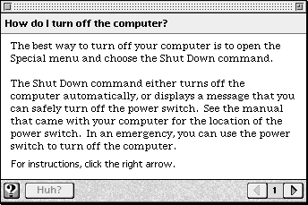
Designing a Decision Panel
You should use a decision panel to let the user view one or more branches. Create a decision panel using either radio buttons or checkboxes. To give the user only one option, use radio buttons; to give the user one or more options, use checkboxes.To create a decision panel, do all of the following:
For example, Figure 2-31 shows a panel that asks the user to choose, using radio buttons, one of two methods for doing the same task.
- Use the Full format.
- Follow the Apple guidelines for using radio buttons and checkboxes (see "Using Radio Buttons and Checkboxes" on page 2-78).
- Use the prompt "Make your choice, then click the right arrow."
- Precede the radio buttons or checkboxes with an instruction that tells the user what to do. For radio buttons, use the instruction "Which do you want to do? Click one." For checkboxes, use the instruction "Which do you want to do? Click one or both." (This instruction is in addition to the prompt.)
Figure 2-31 A decision panel with radio buttons
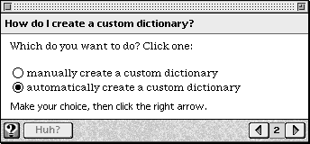
In contrast, Figure 2-32 shows a panel that asks the user to choose, using checkboxes, one or more tasks.
Figure 2-32 A decision panel with checkboxes
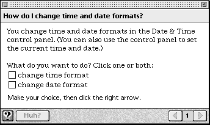
Designing an Action Panel
You should use an action panel to present a single step in a procedure (for example, to tell the user to open a menu). You should present more than one step on an action panel only if there are several ways to perform the same action or several actions that occur in the same place.To create an action panel, do all of the following:
Figure 2-33 shows a SurfWriter Guide panel that tells the user to open a script.
- Use the Tag and Body format to effectively lead the user's attention to the required action. The Tag should tell the user to do the action described on the panel (for example, Macintosh Guide uses the Tag "Do This") and the Body text should describe the actual action. For instructions that require lengthier text (for example, panels that contain multiple steps), place the Tag on the line above the text describing the action.
- Use a consistent Tag phrase for all action panels in your guide files.
- Use terse instructions to keep the panel size small. (The user is likely to keep the panel onscreen while performing the associated action).
- Use the prompt "Do this step, then click the right arrow."
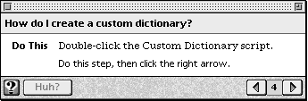
Designing an Information Panel
You should use an information panel to provide brief conceptual explanations. You typically use an information panel in a sequence or branch that explains a concept.To create an information panel
- Note
- You can use an information panel in a sequence that explains a task, but it might be more appropriate to place the information in a Huh? or Tip panel. For more information, see "Designing a Tip Panel" beginning on page 2-60 and "Designing a Panel Associated With a Huh? Button" beginning on page 2-64.

Consider including a content area button that takes the user to the part of the application that the panel describes. For more information, see "Designing Content Area Buttons" beginning on page 2-75.
- use the Full format
- use the prompt "Read this information, then click the right arrow."
For example, Figure 2-34 shows an information panel (from Macintosh Guide) that uses both text and graphics to explain how to use an icon.
Figure 2-34 An information panel
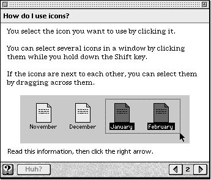
Designing a Tip Panel
You should use a tip panel to give the user a hint about how to perform an action or use an application feature (for example, to tell the user that a script is available for a particular task). The user should access the panel through a button or hot text. See "Designing Buttons" beginning on page 2-72 and "Designing Hot Text, Objects, and Rectangles" on page 2-79 for more information.To create a Tip panel, do all of the following:
For example, Figure 2-35 shows a SurfWriter Guide panel that gives a shortcut for adding a word to the dictionary.
- Use the Full format.
- Place the word "Tip:" followed by the panel title in the panel tile area.
- Use the prompt "Read this information, then you're done."
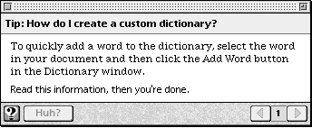
- Note
- You can instead place a tip on the panel that contains the associated action or concept, as long as it does not greatly increase the panel size or significantly distract from the focus of the help instruction. If you do so, use a Tag (such as "Tip") to indicate it to the user. Be sure to use the same Tag phrase for tips throughout your guide files.
Designing a Definition Panel
You should use a definition panel to define key terminology that appears in a panel. Your guide file definitions should use different wording from the definitions provided by help balloons, which define such objects on the Macintosh screen as icons, windows, and commands.Always use a separate panel for a definition rather than placing it on the panel that contains the associated term. The user should access the panel through hot text. See "Designing Hot Text, Objects, and Rectangles" on page 2-79 for more information.
To create a definition panel
For example, Figure 2-36 shows a definition panel (in SurfWriter Guide) that defines the term "AppleScript."
- use the Full format
- place the word "Definition:" followed by the definition term in the panel title area
- use the prompt "Read this information, then you're done."
Figure 2-36 A definition panel
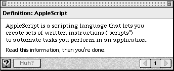
If a definition applies directly to a topic area, you should make it a topic in the Full Access window under the heading "Definitions." For example, Figure 2-37 shows the terms that appear under the "Definitions" heading when you select the Setting Options topic area in Macintosh Guide.
Figure 2-37 Some definitions in the Full Access window
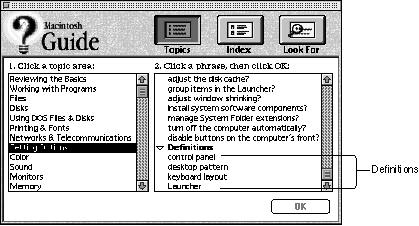
Designing a Related Topics Panel
You should use a related topics panel to refer the user to other guide file topics that pertain to a specific panel or sequence. You can have the user access a related topics panel using a button in the content area or navigation bar, or using hot text. Where you place the button or hot text depends on the content of the related panel that it calls.To create a related topics panel
- To call a panel that lists topics pertaining to an entire sequence, place the Related Topics button or hot text in the content area of the closure panel of that sequence. Alternatively, you can place the Related Topics button in the navigation bar of all panels in that sequence.
- To call a panel that lists topics pertaining to a specific panel in a sequence (except the closure panel), place the Related Topics button or hot text in the content area of that panel.
For example, Figure 2-38 shows a related topic panel that appears in SurfWriter Guide when the user clicks a Related Topics button on the closure panel of a sequence.
- use the Full format
- place the words "Related Topics:" in the panel title area, followed by the user sequence title
- distinguish the related topics (and topic areas) from other text on the panel; for example, place them in a list or use styled text
- list the exact topic or topic area name that appears on the access window
- use the prompt "Read this information, then you're done."
Figure 2-38 A related topics panel
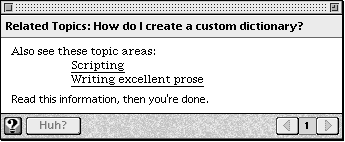
Designing a Transition Panel
You should use a transition panel to connect parts of multipart sequences. That is, use it if the user can consecutively view several branches in a sequence (for example, if the user can select checkboxes on a decision panel). The transition panel must always let the user know that one branch has ended and another is beginning.You should also use a transition panel between the panel that ends a procedure and subsequent panels that provide optional information pertaining to that procedure. Here, the transition panel should let the user know that the required actions are complete and that the remaining panels contain only helpful information.
To create a transition panel
For example, Macintosh Guide contains the topic "How do I change time and date formats?" This topic contains two branches: one for changing the time format and the other for changing the date format. Figure 2-39 shows the transition panel that takes the user from the time format branch to the date format branch.
- use the Full format
- use the prompt "Click the right arrow to continue."
Figure 2-39 A transition panel
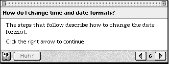
Designing a Closure Panel
You should use a closure panel at the end of a sequence to summarize the information covered by that sequence. The text on the panel should focus only on the help topic rather than repeating navigation information covered by the prompt text.To create the panel
For example, Figure 2-40 shows the closure panel (in SurfWriter Guide) for the sequence "How do I create a custom dictionary?"
- use the Full format
- use the prompt "That's all, you're done."
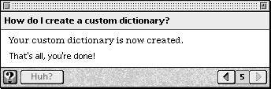
Designing a Panel Associated With a Huh? Button
A panel associated with a Huh? button appears when the user clicks an active Huh? button. The associated panel it calls up provides information crucial to understanding the original panel. The Huh? button must be active in the navigation bar of all panels in a sequence that has an associated panel. Its associated panel can already exist in the guide file, or it can be one created specifically for this button. When the user clicks the active button, the associated panel opens up on top of the original one. If you haven't associated a panel with a Huh? button, it is dimmed. For information on creating a Huh? button, see "Designing Navigation Buttons" on page 2-74.If a panel contains an active Huh? button, always explain the contents of the button's associated panel, so that the user can decide whether to view it. And if you specifically create an associated panel, use the prompt "Read this information, then you're done."
Figure 2-41 shows a panel from SurfWriter Guide that contains an active Huh? button. Notice the text explaining the contents of the button's associated panel.
Figure 2-41 A panel with an active Huh? button and an explanation of the button's associated panel
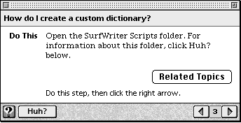
Figure 2-42 shows the panel associated with the Huh? button on the previous panel (Figure 2-41).
Figure 2-42 A typical panel associated with a Huh? button
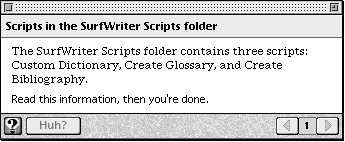
In general, you should not associate more than one panel with a Huh? button. If the information exceeds one panel, consider using a related topics panel or creating a topic or branch.
You can occasionally associate a sequence of panels with a Huh? button for information that is not suitable as either a topic or a branch, for example, information that the user typically reads only once or that applies to only a limited number of users. As with a single panel associated with a Huh? button, the sequence can be another sequence in the guide file or one that you create specifically for the panel.
- For information that appears in another sequence in the guide file, use a related topics panel to point the user to the sequence. For more information, see "Designing a Related Topics Panel" on page 2-62.
- For information that you create specifically for the panel, make it a new topic on the access window or in a branch in the sequence. For more information, see "Designing Topic Areas and Topics" on page 2-37 and "Designing Branches" on page 2-70.
Designing an Oops Panel
You should use an Oops panel to tell the user that a condition specified on a previous panel (for example, opening a control panel) was not met and that it must be met to continue to the next panel. The Oops panel should appear only when the user does not complete an instruction and then clicks the right arrow to continue to the next panel in the sequence; for example, the user does not follow a panel's instructions to open a control panel and then tries to move to the next panel. Use the <Make Sure> command to include an Oops panel in a sequence. For more information, see "Using Context Checks" beginning on page 2-84.An Oops panel should contain an OK button, a description of how to correct the condition, and instructions to correct the condition or press the OK button. If the user makes the condition true and clicks the OK button, Apple Guide takes the user to the next panel in the sequence. If the user does not make the condition true and clicks the OK button, Apple Guide closes the Oops panel and returns the user to the first previous panel that either does not have a <Make Sure> command specified for it or that has a <Make Sure> command whose condition evaluates true.
For example, Figure 2-43 shows an Oops panel (from Macintosh Guide) that appears if the user failed to follow instructions to open the File Assistant application.
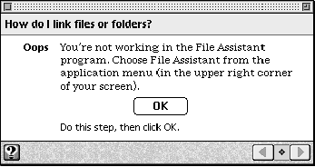
To create an Oops panel, do all of the following:
If possible, use only one panel to describe the Oops information. If you use multiple panels in an Oops sequence, the right arrow button on the first panel and the left arrow button on the last panel must be dimmed. For panels in an Oops sequence, you can specify the <Skip If> and < If> commands but not the <Make Sure> command. For more information, see "Using Context Checks" beginning on page 2-84.
- In its sequence display title area, place the same title used by the sequence.
- Use the Tag and Body format so that the user can easily discern the required action.
- Use the tag "Oops" (or its localized equivalent).
- Place the OK button in the center of the panel. For more information, see "Using Standard Buttons" on page 2-76.
- Use the standard text to describe the Oops condition and tell the user what to do: "The condition is not true. Click OK for instructions (or make condition true, then click OK)." Replace the italic text with text specific to the condition that is not true.
- Avoid using a prompt in this panel.
If you specify that the Oops panel appear if a certain condition is not true on a panel--for example, the condition is not true if a particular control panel is not open--you should specify it for all other panels in that sequence that contain the same condition.
You should also verify whether it would be better to use a Continue panel, which is described in the next section.You should not mix use of the Continue and Oops panels for the same condition.
Designing a Continue Panel
You should use a Continue panel to have Apple Guide offer to complete for the user the condition that hasn't been met (for example, opening a control panel). The panel appears only if the condition on a panel is not true when the user clicks the right arrow to continue to that panel in the sequence. For example, if the user does not follow a panel's instructions to open a control panel and then tries to move to the next panel, a Continue panel appears. You include a Continue panel in a sequence using the <Make Sure> command. For more information, see "Using Context Checks" beginning on page 2-84.A Continue panel should tell the user to wait for Apple Guide to perform the condition and then click the Continue button on the panel.
Figure 2-44 shows a Continue panel that appears in SurfWriter Guide.
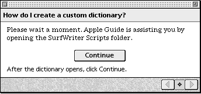
To create a Continue panel, do all of the following:
Before specifying a Continue panel, you must first see if it is programmatically possible to perform the given condition. For example, you can use AppleScript to perform the task for the user. If it is not programmatically possible to use a Continue panel, use an Oops panel instead (described in the previous section).
- Place in the sequence display title area the same title used by the sequence.
- Use the standard text to tell the user what Apple Guide is doing: "Please wait a moment. Apple Guide is assisting you by condition being performed." Replace the italic text with text specific to the condition being performed.
- Place the Continue button in the center of the panel. For more information, see "Using Three-Dimensional Buttons" on page 2-77.
- Use the prompt "After the action occurs, click Continue." (Replace the italic text with text specific to the action being performed.)
If you specify that the Continue panel appear if a certain condition is not true on a panel--for example, the condition is not true if a particular control panel is not open--you should specify it for all other panels in that sequence that contain the same condition. You should not mix use of the Continue and Oops panels for the same condition.